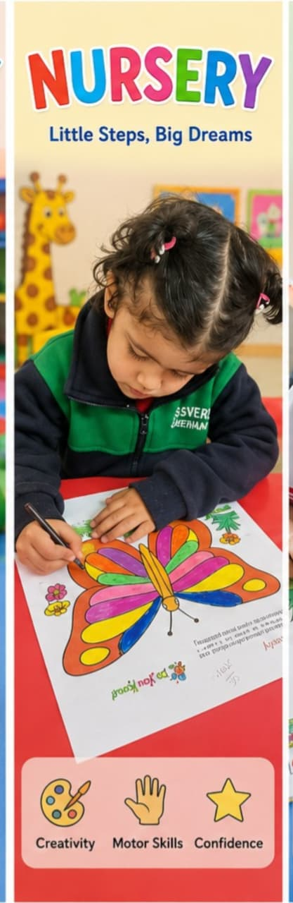
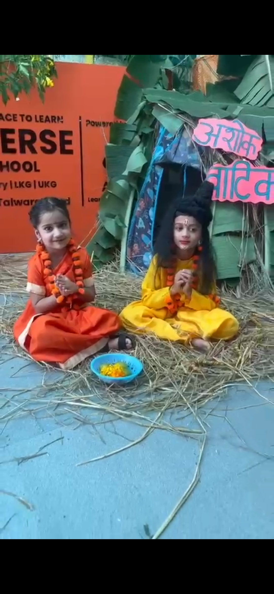

Premium early childhood education in Rehan
Where little minds grow with confidence, care and curiosity.
Kidsverse School creates a warm, modern and activity-rich learning environment for children from Playway to Grade 1, with after-school support for Grade 1 to Grade 10.
Safe & caring classrooms
Activity-based learning
Parent-friendly guidance

2+ yrsPlayway onwards
1-10After-school support
The Kidsverse standard
A premium early learning school with a personal heart.
Kidsverse is designed for parents who want their child to feel safe, speak confidently, learn joyfully, and build strong foundations before moving into higher grades.


Learning you can feel
Bright spaces, happy routines and confident little voices.
Every corner of Kidsverse is planned to make children participate, speak, create, ask questions and enjoy coming to school every day.
Activity rooms
Celebration-based learning
Confidence circles
Parent-friendly updates
Programs offered
Age-wise learning journeys for every milestone.
Premium program cards help parents quickly understand the right entry point for their child.

2 - 3 years
Playway
Gentle separation, sensory play, rhymes, social comfort and joyful routines.
View Details
3 - 4 years
Nursery
Language, habits, art, movement, storytelling and early concept building.
View Details


6 - 7 years
Grade 1
Confident reading, writing, maths, EVS, values, expression and foundational discipline.
View DetailsAfter-school learning center
Academic and skill support for Grade 1 to Grade 10.
Kidsverse continues the child’s learning journey beyond preschool through structured after-school classes, homework support, concept clarity, communication practice and future skill exposure.
Ask About After-School ClassesReading, writing, maths and homework rhythm.
For young school learners, we focus on daily study habits, neat work, concept clarity and confidence.
Why parents choose Kidsverse
Everything a child needs before formal schooling becomes serious.
Child-safe environment
Warm, supervised and caring spaces where children feel settled.
Activity-based curriculum
Learning through stories, phonics, art, play, role play and discovery.
Confidence and communication
Children practice speaking, sharing, asking questions and presenting.
Parent partnership
We guide parents with clarity and keep the child’s growth personal.
Kidsverse moments
Real learning, celebrations and classroom joy.



Activities & cultural events
We celebrate every occasion as a learning moment.
Festivals, national days, theme days, sports, yoga, storytelling, art, rhymes and performances help children build confidence, culture and joyful school memories.
Parent FAQ
Have questions before visiting?
We have answered common parent questions about age fit, admissions, class readiness, after-school classes, safety and the Kidsverse learning approach.
Admissions and enquiries
Start with a school visit and a friendly counselling discussion.
Share your child’s age, class interest, and whether you are looking for preschool, Grade 1, or after-school support.